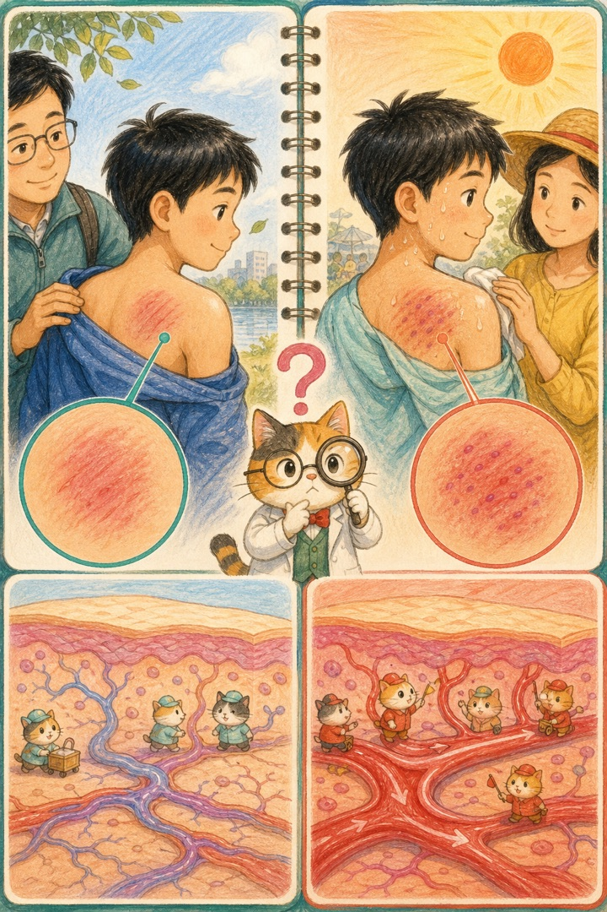
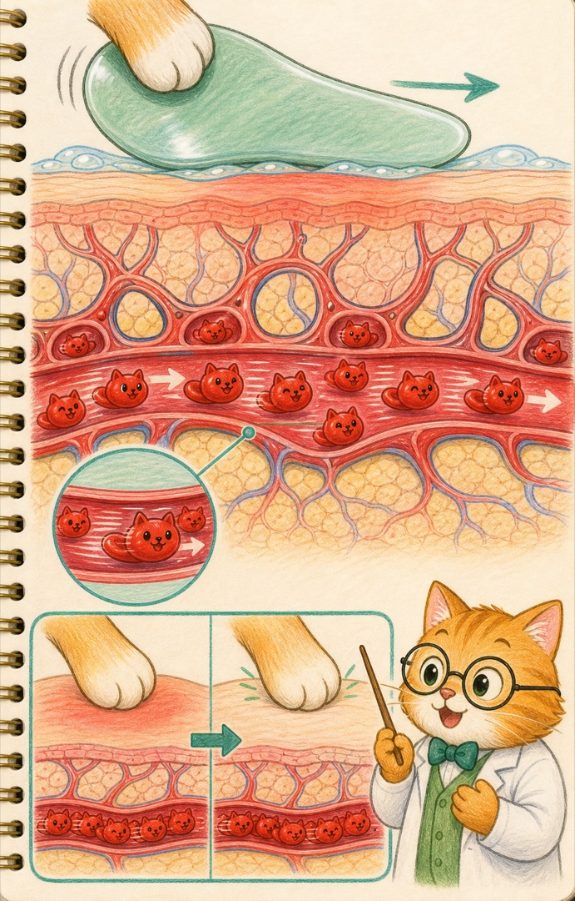
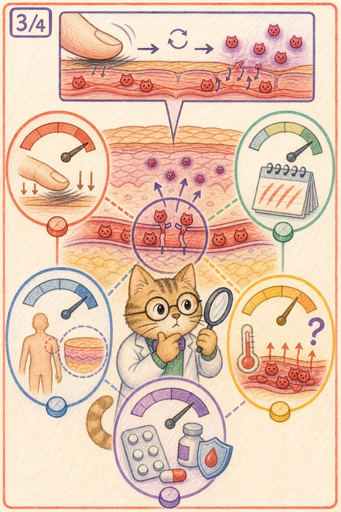
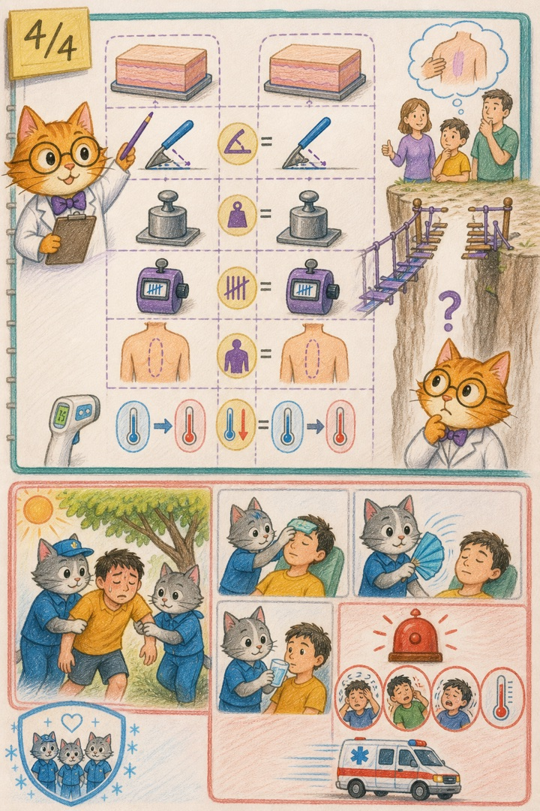
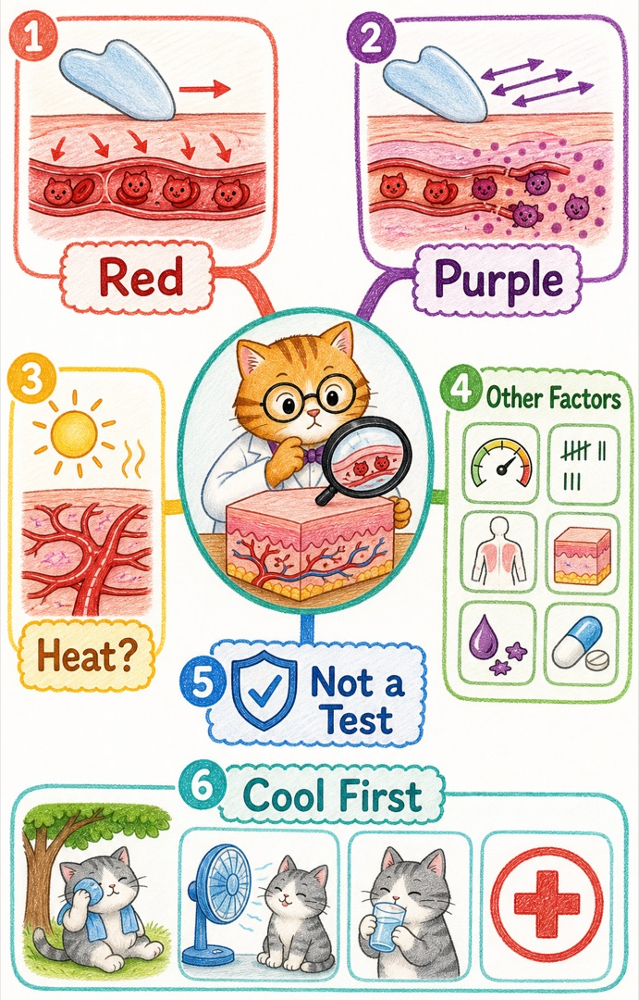

红：血还在血管里
主要是局部血流增加和血管扩张，颜色可能随按压短暂变浅。
中暑时好像更容易变紫，平常却只是发红。难道紫色真是“暑气现身”了吗？喵博士要把皮肤放大一万倍。
这个观察很有价值。许多真正的科学问题，都是从“我好像反复看见了同一件事”开始的。
但观察还不是宇宙法令。要知道它是不是每个人都适用，我们必须追问：两次刮痧的力度一样吗？次数一样吗？部位一样吗？皮肤和身体状态一样吗？

在我们的世界里，那其实是……刮痧工具在皮肤表面反复推压。局部受到摩擦和压力后，微小血管扩张，更多红细胞猫在血管公路里经过，皮肤看起来就会发红、发热。
这时，大多数红细胞猫仍然待在血管里面。用手指轻轻按压红色区域，颜色常会短暂变浅，因为血液被暂时挤开，松手后又回来。

已经有研究观察到：健康受试者接受刮痧后，处理区域的表面微循环也会明显增加。因此，“没中暑的人完全不会出痧”并不准确，健康人同样可能发红，甚至出现紫红点。
当局部承受反复、较强或较久的机械刺激时，一些很细小的血管可能发生微小渗血。少量红细胞猫离开血管，来到周围组织中，就形成了按压后不容易立刻褪色的红点、紫红点或片状痕迹。
主要是局部血流增加和血管扩张，颜色可能随按压短暂变浅。
属于皮下出血点或瘀斑的一部分，颜色会停留数日，再由身体慢慢清理。

身体变热时，为了把核心的热送到体表，皮肤血管会扩张，皮肤血流增加。就像热猫提前把更多血管公路打开，让更多红细胞猫来到皮肤附近。
因此，如果在相同部位、相同力度、相同次数下比较，中暑或明显热应激时更快出现明显颜色，确实有一个可以理解的生理假设：当地血流已经增多，再接受机械推压，颜色变化可能更显眼。
目前没有足够的临床证据证明：“中暑必然出紫痧，健康时只能发红。”我们可以把家庭观察郑重写进故事，但不能把紫色当成中暑检测仪。
因为皮肤上还藏着许多旋钮：
如果科学家真的要检验“热的时候是否更容易变紫”，就要使用可控制力度和次数的设备，在相同部位测量温度、皮肤血流和颜色变化，再比较足够多的人。
不能为了验证好奇心，反复在孩子身上刮出瘀斑。家庭经历可以提出问题，严谨实验负责回答问题。

刺激较强、次数较多、局部容易出血，或个体较易出现瘀斑时，即使没有中暑也可能出现紫红点。
刺激很轻、时间很短，或个体皮肤反应不同，即使身体受热也不一定明显变紫。
刮痧最确定的即时变化发生在被处理的局部皮肤：摩擦、血管扩张、微循环增加，以及可能出现的皮下出血点。一些人也会觉得局部温热、放松或酸痛感改变。
但皮肤变红或变紫，并不等于身体核心温度已经安全下降。现有证据不足以证明刮痧可以替代中暑时最重要的降温、补液与医疗评估。
颜色是一张局部皮肤地图，不是全身温度计，也不是治疗成功章。

这就是喵博士与探险家共同找到的答案：中暑时更容易变紫是一条珍贵线索，热猫可能让皮肤血管公路更繁忙；但紫色真正记录的是局部血流、机械刺激和个体差异的共同结果，而不是“暑气被刮出来”的证明。
下一次看见一种神奇变化，我们还可以继续问：它是判断疾病的信号，还是身体被我们触碰后留下的痕迹？